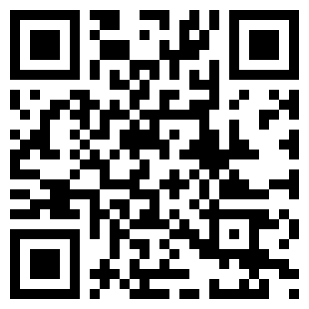
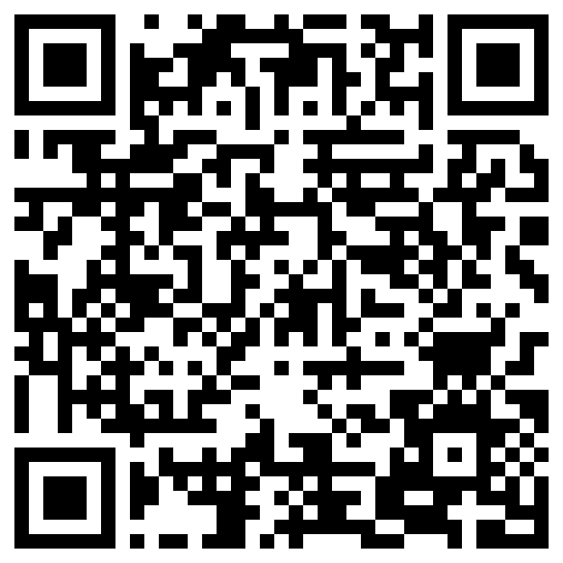

Stiahnuť
Download
| Platforma | Platform | Stav | Status |
|---|---|---|---|
| iPhone / iPad (iOS 17+) | App Store, verzia 2.6.1 — zadarmo (2.6.2 je v schvaľovaní)App Store, version 2.6.1 — free (2.6.2 is in review) | ||
| Mac (macOS 14+) — organizátororganiser | Mac App Store, verzia 2.6.1 — zadarmo (2.6.2 je v schvaľovaní)Mac App Store, version 2.6.1 — free (2.6.2 is in review) | ||
| Server pre organizátoraOrganiser server | verzia 1.2.4, jeden súbor bez závislostí — balík na dvojklik a návodversion 1.2.4, one file, no dependencies — double-click package and guide | ||
| Android (9+) | verzia 1.4.3 v uzavretom teste Google Play — zadarmo; testeri: skupina congressa-testers → potvrdiť testovanie → Google Playversion 1.4.3 in Google Play closed testing — free; testers: congressa-testers group → opt in → Google Play |

iPhone · iPad · Mac
App Store, zadarmoApp Store, free

Android
Google Play, zadarmoGoogle Play, free
Kódy pokojne premietnite na plátno alebo dajte na plagát konferencie — aplikácia je zadarmo a nezávislá od organizátorov.Feel free to project the codes or put them on a conference poster — the app is free and independent of the organisers.
Kontakt:Contact: congressa_main@icloud.com · PodporaSupport · Ochrana súkromiaPrivacy policy